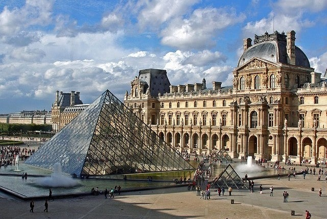
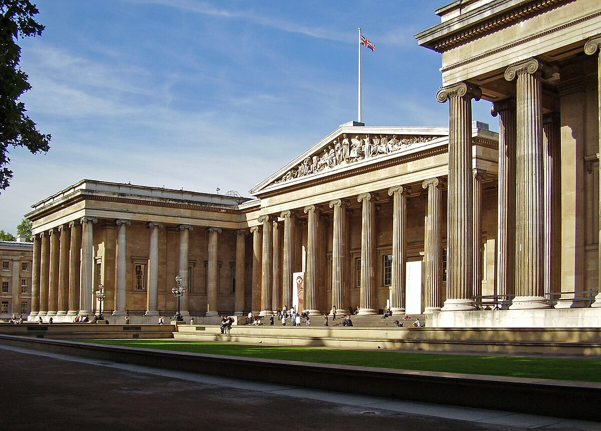
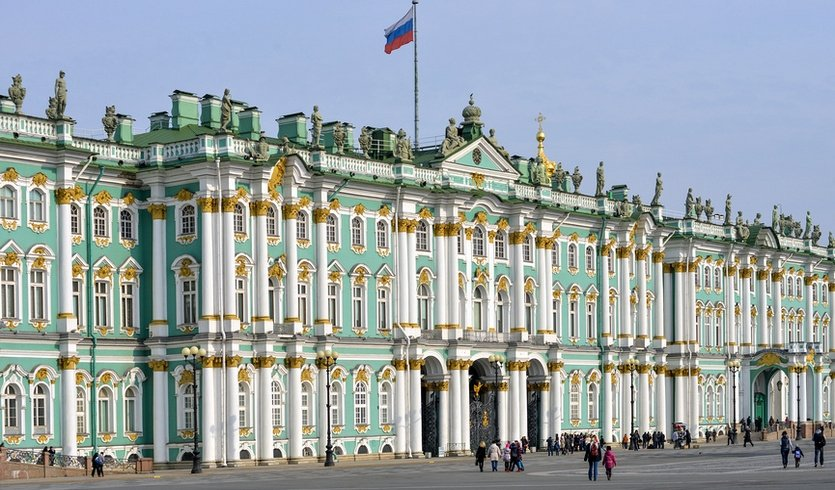
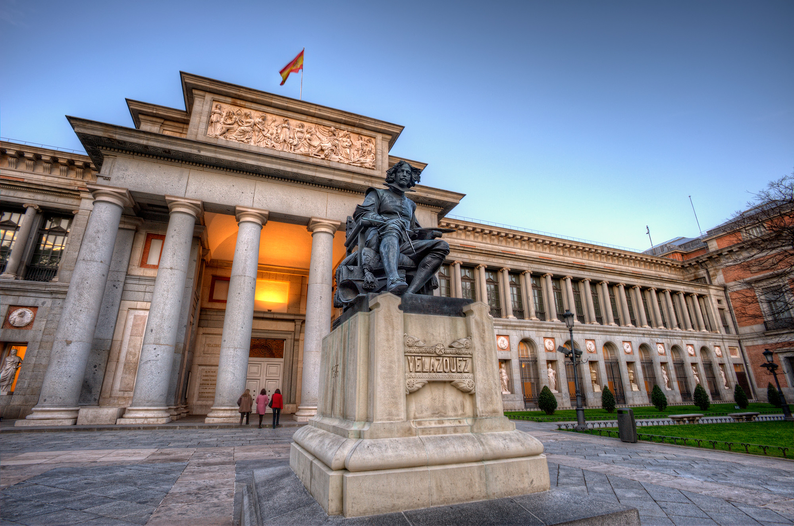
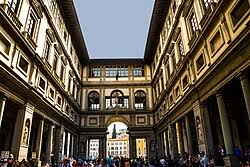
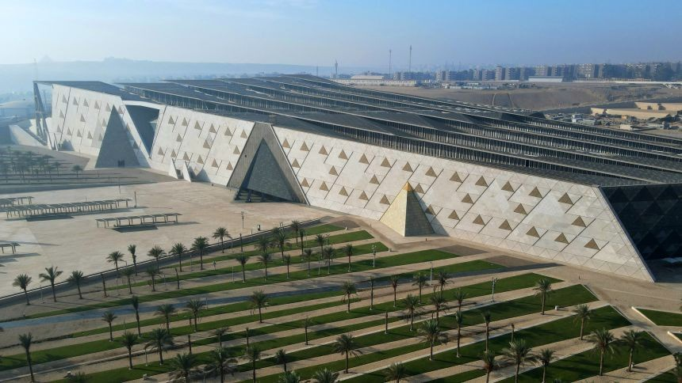
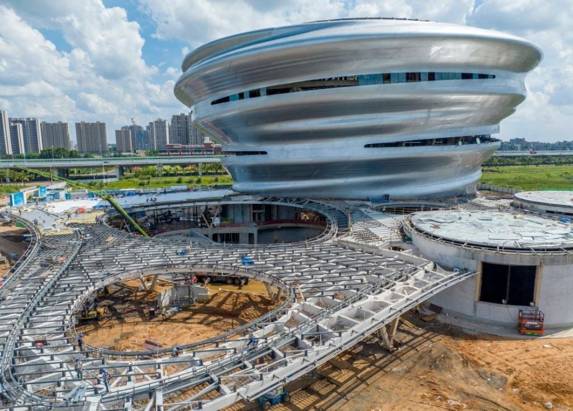

Luvr muzeyi
Luvr muzeyi Parijda joylashgan bo'lib, dunyoning eng yirik va mashhur san'at muzeylaridan biridir. Bu yerda Leonardo da Vinchi, Mikelanjelo va boshqa buyuk rassomlarning asarlari mavjud.
Britaniya muzeyi
Britaniya muzeyi London shahrida joylashgan bo'lib, insoniyat tarixiga oid minglab eksponatlarni o'z ichiga oladi. Bu yerda Misr, Yunon va Rim madaniyatlarining noyob asarlarini ko'rishingiz mumkin.
Vatikan muzeylari

Vatikan muzeylari Rim shahrida joylashgan bo'lib, dunyoning eng muhim san'at kolleksiyalaridan biriga ega. Bu yerda Rafael, Mikelanjelo va boshqa buyuk rassomlarning asarlari mavjud.
Ermitaj muzeyi
Ermitaj muzeyi Sankt-Peterburg shahrida joylashgan bo'lib, dunyoning eng yirik san'at muzeylaridan biridir. Bu yerda Rembrandt, Van Gog va boshqa buyuk rassomlarning asarlari mavjud.
Prado muzeyi
Prado muzeyi Madrid shahrida joylashgan bo'lib, dunyoning eng muhim san'at kolleksiyalaridan biriga ega. Bu yerda Velaskes, Goya va boshqa buyuk rassomlarning asarlari mavjud.
Uffizi galereyasi
Uffizi galereyasi Florensiya shahrida joylashgan bo'lib, dunyoning eng muhim san'at kolleksiyalaridan biriga ega. Bu yerda Bottichelli, Leonardo da Vinchi va boshqa buyuk rassomlarning asarlari mavjud.
Rijksmuseum

Rijksmuseum Amsterdam shahrida joylashgan bo'lib, Niderlandiya san'atining eng yaxshi namoyishlarini o'z ichiga oladi. Bu yerda Rembrandt va Vermeer kabi rassomlarning asarlarini ko'rishingiz mumkin.
Misr muzeyi
Misr muzeyi Qohira shahrida joylashgan bo'lib, qadimgi Misr madaniyatiga oid keng ko'lamli eksponatlarni o'z ichiga oladi. Bu yerda fir'avnlar va ularning xazinalarini ko'rishingiz mumkin.
Milliy havo va kosmos muzeyi
Milliy havo va kosmos muzeyi Vashington, D.C. shahrida joylashgan bo'lib, aviatsiya va kosmonavtika tarixiga oid keng ko'lamli eksponatlarni o'z ichiga oladi. Bu yerda samolyotlar, raketalar va kosmik kemalarni ko'rishingiz mumkin.